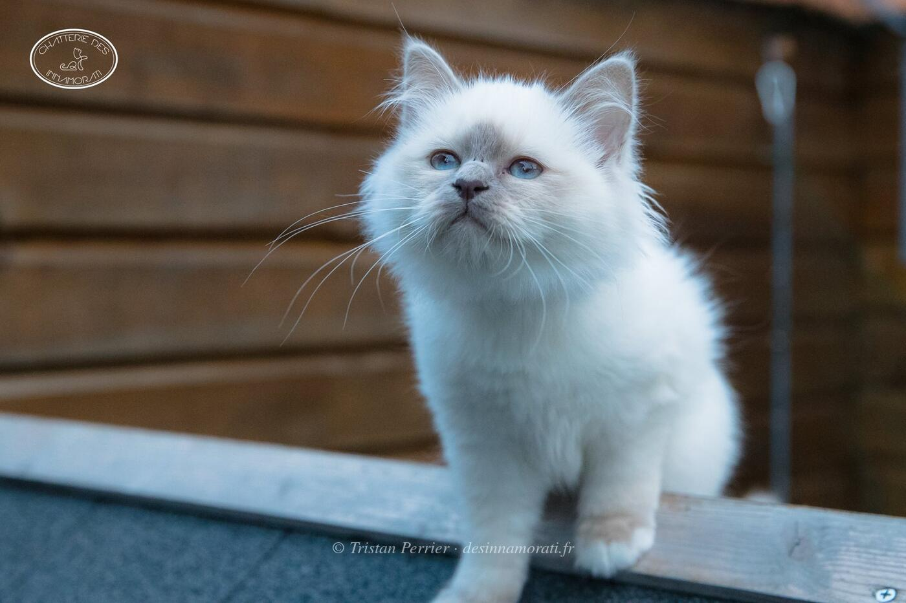

Naissance5 juillet 2017
ParentsMonoï du Bossuet Perrières × Perla Nera Eldorado
Album4 photos, d’octobre 2017 à décembre 2017


Palmarès
2 expositions · 3 jugements2017
- Le BarpEXC1
- BiarritzEXC2
- BiarritzEXC2
EXC Excellent (classement) · CAC, CACIB, CAGCIB, CACS certificats de champion, champion international, grand champion international et suprême · CAP, CAPIB, CAGPIB, CAPS équivalents pour les chats stérilisés · BIV meilleur de la variété · NOM nommé pour le Best in Show · BIS Best in Show · BOB Best of Best, le meilleur de toute l’exposition
Photos réduites et marquées. Elles appartiennent à la Chatterie des Innamorati et ne peuvent pas être reprises dans une annonce.